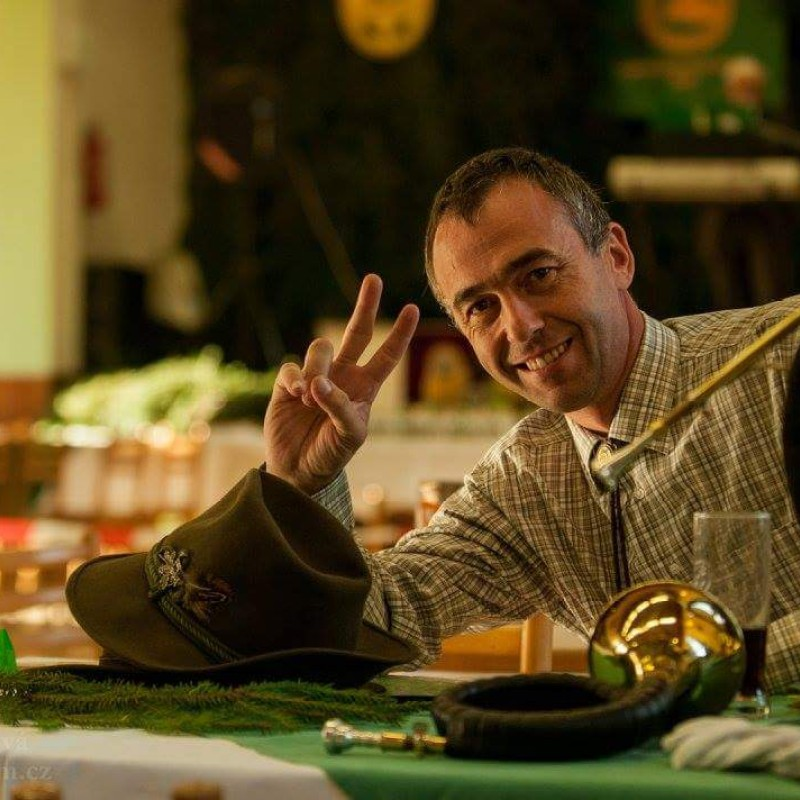

Jako soudní znalec jmenovaný rozhodnutím Krajského soudu nabízím vysoce odborné služby v oblasti lesnictví a ekonomiky. Mé posudky vycházejí z aktuálních právních předpisů a dlouholeté praxe v oboru.
Soudní znalec se zaměřením na vyčíslení škod na zemědělských a lesních pozemcích.
Jako soudní znalec jmenovaný rozhodnutím Krajského soudu nabízím vysoce odborné služby v oblasti lesnictví a ekonomiky. Mé posudky vycházejí z aktuálních právních předpisů a dlouholeté praxe v oboru.
Primárně se specializuji na vyčíslení škod způsobených lesní zvěří, a to jak na lesních porostech, tak na zemědělských plodinách a pozemcích. Poskytuji odborné posudky pro:

Jsem odborník s více než dvacetiletou praxí v oblasti lesnictví, školství a poradenství. Působím jako učitel na VOŠL a SLŠ v Písku a mám bohaté zkušenosti s vedením lesnických firem i odborných projektů.
Věnuji se výuce, znalecké činnosti a vzdělávání dospělých. Jsem akreditovaný poradce Ministerstva zemědělství ČR a soudní znalec v oborech lesnictví, myslivost a ochrana přírody. Aktivně spolupracuji s vysokými školami a publikuji odborné články.
Kromě znalecké činnosti se profesionálně věnuji také těmto oborům:
Zážitkové vzdělávací programy pro mateřské a základní školy. Poznávání přírody, lesa a myslivosti hravou formou.
Profesionální kurzy pro práci s motorovou pilou a křovinořezem. Bezpečnost práce (BOZP), údržba a získání osvědčení.
Máte dotaz nebo potřebujete vypracovat posudek? Neváhejte mě kontaktovat telefonicky nebo e-mailem.
Oslov 97, 398 35 Oslov
Tel: +420 777 748 848
Email: frant.capek@seznam.cz